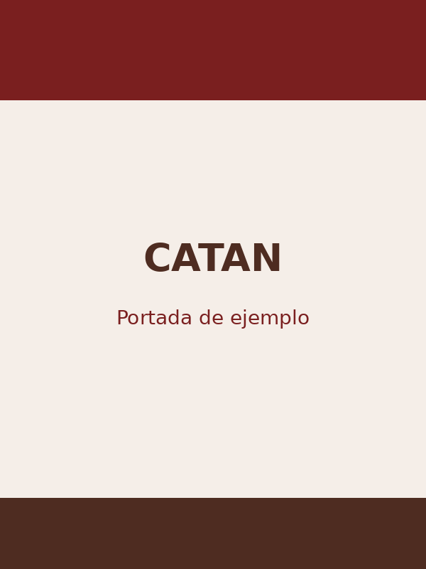

Catan
Catan es un juego de estrategia en el que los jugadores deben construir poblados, caminos y ciudades mientras intercambian recursos.
Su sistema de comercio hace que cada partida sea diferente y obliga a negociar constantemente con los demás jugadores.
Ver reglamento